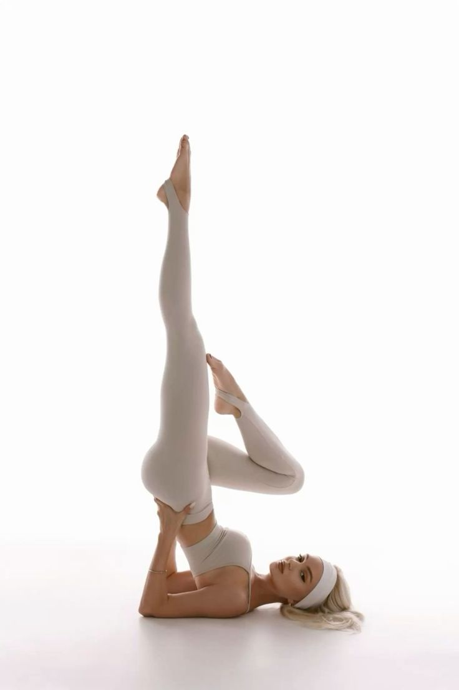

Mat Pilates guide
Discover Mat Pilates.
Build strength, improve control, and move with greater awareness through a practice that connects movement, stability, and mindful breathing.
Start the Program
What Is Mat Pilates?
Mat Pilates is a form of Pilates performed primarily on an exercise mat rather than on large pieces of equipment such as a Reformer.
The practice uses controlled, precise movements with an emphasis on core stability, strength, flexibility, posture, muscle control, and breathing.
Although many exercises use body weight as resistance, smaller pieces of equipment can also be incorporated depending on the class and level.
Control, Precision and Connection
Pilates is often described as a mind-body exercise method. Rather than simply completing repetitions, the practice encourages concentration and control throughout each movement.
Common principles associated with Pilates include centering, concentration, control, precision, flow, and breathing.
Together, these ideas encourage purposeful movement and greater awareness of how the body moves.
-
01
Centering
Movement begins with awareness of the center of the body and steady core engagement.
-
02
Control
Exercises are performed with intention, smooth transitions, and attention to form.
-
03
Breathing
Breath supports rhythm, focus, and calm coordination throughout the practice.
A Stronger Foundation
Core stability is a central part of Pilates. Exercises commonly challenge the abdominal muscles and surrounding muscles that help support and control the trunk.
Research on Pilates has found improvements in abdominal muscular endurance compared with no exercise in healthy participants.
A strong and well-controlled core supports efficient movement throughout many everyday activities.
Benefits of Mat Pilates
Regular Mat Pilates practice can support several aspects of physical fitness and movement quality.
-
01
Core Strength
Pilates places significant emphasis on the muscles that stabilize and control the trunk.
-
02
Balance & Control
Controlled exercises challenge stability, coordination, and awareness of body position.
-
03
Flexibility & Mobility
Pilates combines strength with controlled movement through different ranges of motion.
-
04
Posture & Body Awareness
The practice encourages attention to alignment, movement quality, and body control.
-
05
Mindful Movement
Breathing, concentration, and controlled movement are important elements of the Pilates method.
-
06
Minimal Equipment
Mat Pilates can be performed primarily with a mat, making it an accessible alternative to equipment-based Pilates.
Mat Pilates vs. Reformer Pilates
Both Mat Pilates and Reformer Pilates are based on the broader Pilates method and share an emphasis on controlled movement, stability, precision, and breathing.
The main difference is the equipment. Mat Pilates is performed primarily on a mat and commonly uses body weight for resistance.
Reformer Pilates uses a specialized machine with springs, a moving carriage, straps, and other components that can provide both resistance and assistance.
Neither approach needs to be presented as universally better. They simply offer different ways to practice Pilates.
Who Is Mat Pilates For?
Mat Pilates exercises can be adapted and progressed in different ways, making the practice suitable for a range of experience levels.
Beginners can focus on learning foundational movement patterns, breathing, alignment, and control, while more experienced participants can work with more challenging variations.
A well-structured session should prioritize movement quality and appropriate progression rather than simply making every exercise as difficult as possible.
What to Expect from a Mat Pilates Session
A Mat Pilates session typically combines a sequence of controlled exercises performed on the mat.
Depending on the session, movements may be performed lying down, seated, kneeling, or standing.
Throughout the practice, attention is placed on breathing, alignment, core engagement, control, and smooth transitions between movements.
The goal is not simply to move quickly or complete as many repetitions as possible. Quality and control are central to the Pilates approach.
Ready to Experience Mat Pilates?
Discover a more mindful approach to strength, stability, and movement.
Start the Program